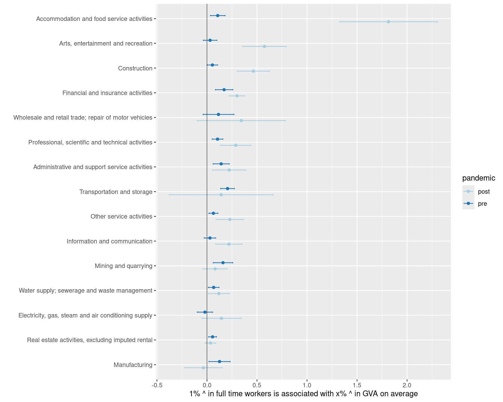
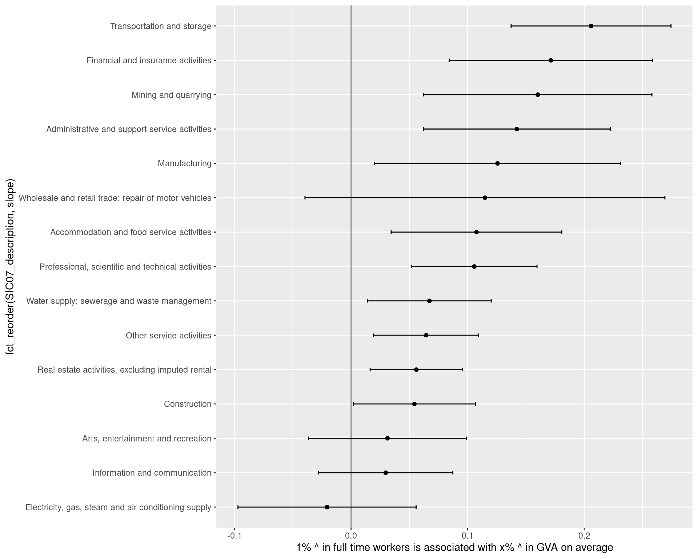
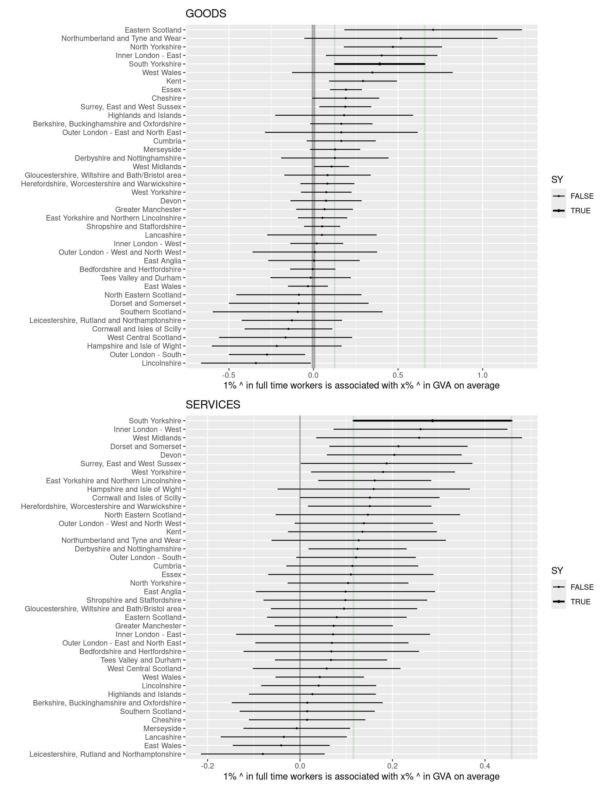
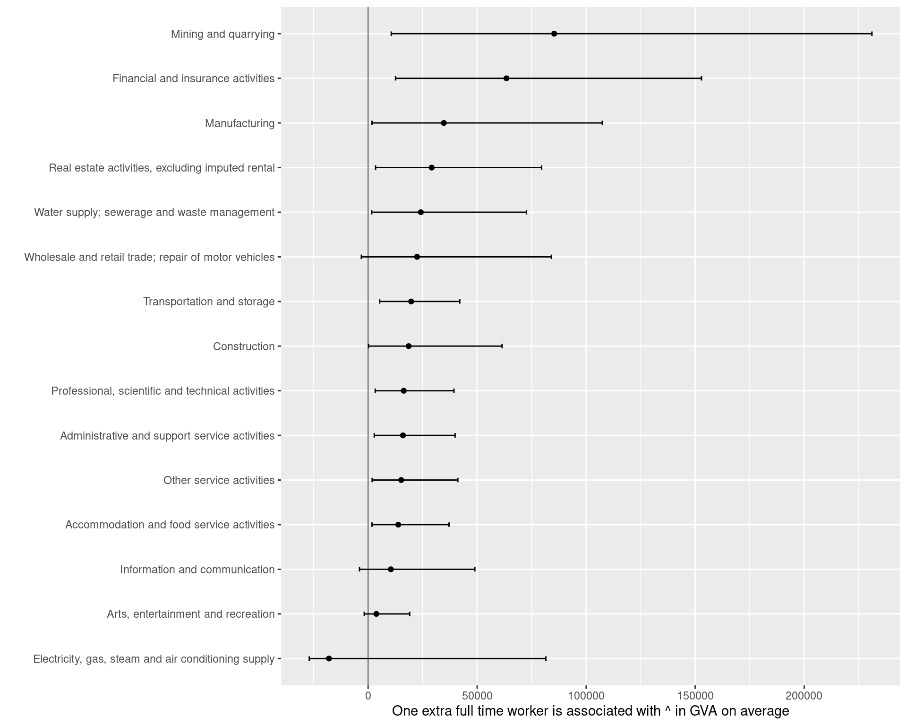

GVA jobs elasticity
Headlines, plus all the caveats
- These results estimate the elasticity between jobs and GVA for South Yorkshire e.g. “For every job added to the economy, GVA could change by…” (with 95% confidence intervals). (Log of difference in jobs is regressed on log of GVA differnce across pairs of years.)
- Data comes from the difference between pairs of years for GVA and jobs. There isn’t enough data to get ITL2 vs SIC sections, but there’s enough for each separately (and ITL2 broken down by goods v services). Here, just pre-pandemic data is used too - most likely a more reliable take on the real jobs/GVA relationship (though COVID will have changed that).
- To get South Yorkshire sector estimates, national sector elasticities are applied to South Yorkshire sectors (“If South Yorkshire sectors had national elasticities, then one extra SY job equals x GVA change”), and that is adjusted by the difference to the national mean for South Yorkshire as a whole, by goods v services, to reflect SY’s national position.
- Public sectors have been removed from the analysis, because ONS deduces their GVA by multiplying jobs x regional wages. So trying to find GVA elasticities would be circular.
- Finance is a highly modelled sector, GVA-wise, so treat with caution.
- Mining is a tiny proportion of SY economy (~200 jobs) so elasticities likely to be volatile
Thoughts:
- Productive sectors (GVA per worker / per hour terms) may be inelastic to employment change - so adding new workers may not affect output as much as one might hope. This is most likely due to the ratio of workers to capital investment in those sector’s GVA. For example, this appears to be the case for ICT as a whole, as well as in South Yorkshire: it’s a highly productive sector but changes in employment lead to only weak GVA changes. Sheffield’s ICT sector is largely telecoms - a very capital intensive sector.
- Some of these results are puzzling e.g. a low jobs/GVA elasticity for power sectors is to be expected given its huge capital intensity, but arts/entertainment is also low. Service sectors like that should have a more direct relationship between employment and output; why doesn’t it do so here? (See below on why post-COVID job/GVA losses appear to strengthen the elasticity in food/ents sectors).
- Confidence intervals overlap a great deal. A lot of sectors’/places’ jobs <> GVA relationship are not very statistically separable from each other. This is a finding in itself - job investment may have quite even results regardless of focus.
- Manufacturing does stand out in South Yorkshire however, with higher possible values for the job > GVA multiplier.
Caveats!
- It doesn’t identify causation. Salaries are a large part of the GVA number, but GVA can also change due to non-worker/capital investment, or external economic factors. So a GVA increase can lead to job increases.
- Capital investment can correlate to an increase or decrease in jobcount; the numbers here just try to pick up on the average direction of the relationship between jobcount and GVA change.
What’s below
The three plot types and table below build on each other:
- Job to GVA elasticities for SIC sections nationally (“A 1% increase in jobs is associated with an x% increase in GVA in these sectors…”)
- The same, but looking at places (broken down by goods and service categories - more granular sectors don’t give enough data points)
- Combine those two data sources to give an estimate of actual job-increase to GVA ratios for South Yorkshire sectors, by (1) applying national sector elasticities to South Yorkshire (“If SY sectors had national elasticities…”); (2) adjusting by SY’s difference to the mean for its economy as a whole (given how much higher elasticities are on average in plot 2).
Jobs / GVA elasticities for broad sectors across the UK, pre and post pandemic
Same data, pre-COVID only
… to make it easier to see without huge apparent service sector elasticities post-COVID (those are caused by large negative values - post COVID, food and entertainment jobs and output both dropped hugely, producing a stronger positive slope line, counterintuitively).
That doesn’t necessarily invalidate the data - correlated losses shine a light on the jobs/GVA relationship too - but the pandemic had such a severe impact on these sectors, it’s likely unrepresentative of ‘normal’ eonomic movements.

Jobs/GVA elasticities at ITL2 level with South Yorkshire marked (goods v services)

Combining those two to estimate sector elasticities for South Yorkshire. “If one more job in sector x, then GVA £ change by…”

Table of data in the last plot
sector | ^1 job = | min CI (95%) | max CI (95%) |
|---|---|---|---|
Mining | £85342 | £10604 | £231071 |
finance/insu | £63456 | £12561 | £152904 |
Manuf | £34743 | £1781 | £107394 |
Real est | £29163 | £3433 | £79541 |
water | £24188 | £1642 | £72656 |
Retail | £22449 | £-3117 | £84045 |
Transport | £19752 | £5309 | £42051 |
Construction | £18609 | £210 | £61430 |
Scientific | £16342 | £3237 | £39369 |
admin/support | £15984 | £2814 | £39902 |
other | £15171 | £1841 | £41158 |
Food/service | £13827 | £1781 | £37105 |
ICT | £10426 | £-3949 | £48941 |
Entertainment | £3766 | £-1778 | £19069 |
power | £-17942 | £-26995 | £81522 |